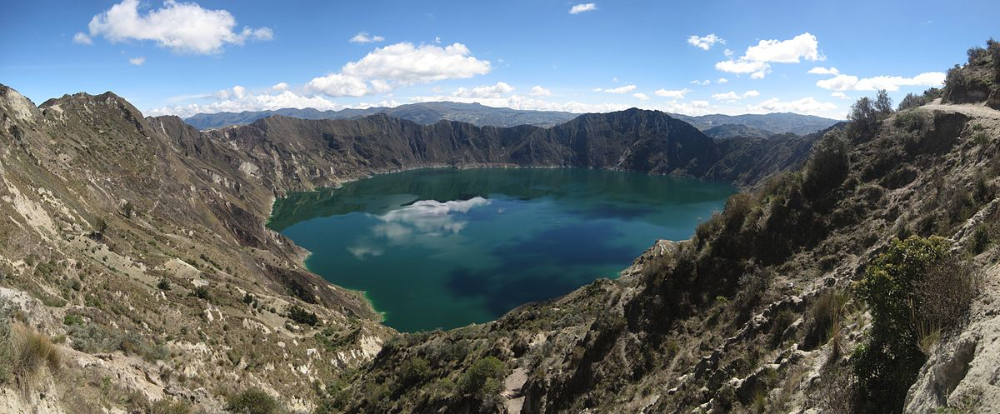
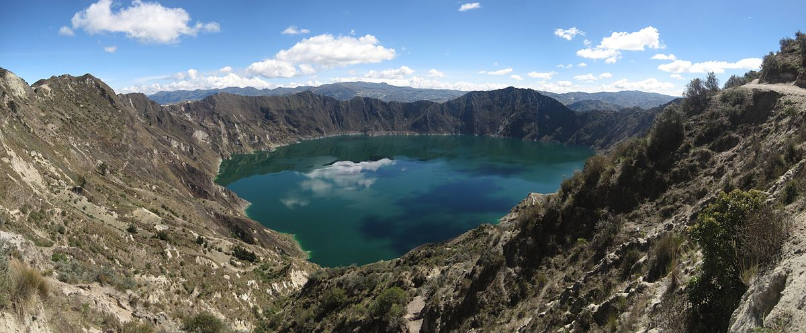

La Mitad del Mundo
Entre los lugares para conocer tenés las viviendas ancestrales, la estación del tren, la plaza del cacao, el monumento ecuatorial, los pabellones culturales, el planetario. Además una de las actividades por realizar es la de equilibrar un huevo sobre un clavo y te dan un diploma si lo consigues, si alguna vez tuviste miedo de subir a la balanza ésta es tu oportunidad por que en ese lugar todos pesamos menos, te podes sacar esa duda de si cambia el sentido del giro del agua del inodoro dependiendo del hemisferio en el que te encuentres (si es que alguna vez la tuviste).
El Volcán Cotopaxi
El primer lugar al que fui cuando llegué aquí fue al Cotopaxi – que en español significa Cuello de Luna-. Imagínense que una paraguaya que para nada está acostumbrada a la altura (el punto más alto del Paraguay es el Cerro Tres Kandú con sólo 842 metros sobre el nivel del mar) tuvo la genial idea de subir el segundo volcán más alto de Ecuador con 5897 msnm. ¡Fue una locura!
Laguna Quilotoa
El pequeño pueblo de Pujilí tiene la suerte de tener una de las lagunas más hermosas e
impresionantes que vi en mi vida. La misma cuando recibe los rayos del sol se torna de un color verdoso y azulado, esto gracias a los minerales ubicados en ella. El acceso es libre y gratuito, hay comedores, hoteles y tiendas de artesanías. Hace bastante frío, por lo que les recomiendo ir con ropa abrigada.
 
